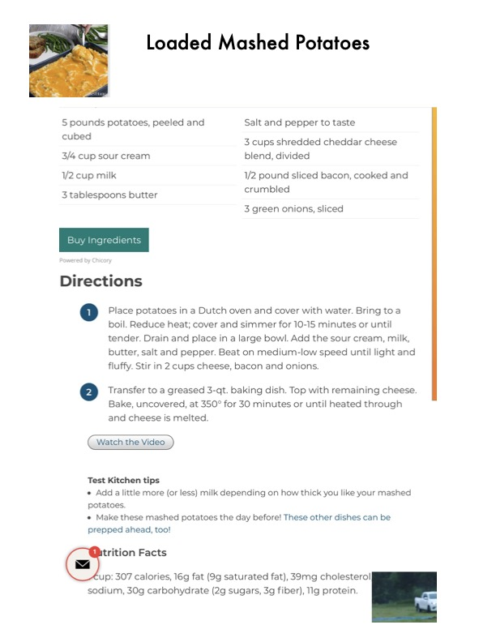

Loaded Mashed Potatoes

Original cookbook page 188
A rich and indulgent side dish featuring creamy mashed potatoes loaded with cheese, bacon, and green onions, baked until golden and bubbly.
Prep: 10-15 minutes • Cook: 30 minutes • Total: 40-45 minutes
Ingredients
- 5 pounds potatoes, peeled and cubed
- ¾ cup sour cream
- ½ cup milk
- 3 tablespoons butter
- Salt and pepper to taste
- 3 cups shredded cheddar cheese blend, divided
- ½ pound sliced bacon, cooked and crumbled
- 3 green onions, sliced
Instructions
- Place potatoes in a Dutch oven and cover with water. Bring to a boil. Reduce heat; cover and simmer for 10-15 minutes or until tender. Drain and place in a large bowl. Add the sour cream, milk, butter, salt and pepper. Beat on medium-low speed until light and fluffy. Stir in 2 cups cheese, bacon and onions.
- Transfer to a greased 3-qt. baking dish. Top with remaining cheese. Bake, uncovered, at 350° for 30 minutes or until heated through and cheese is melted.
📝 Recipe Notes
Test Kitchen Tips: Add a little more (or less) milk depending on how thick you like your mashed potatoes. Make these mashed potatoes the day before! This dish can be prepped ahead.
Recipe #188 from collection